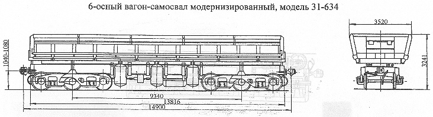

Назначение: для транспортировки и механизированной разгрузки сыпучих и кусковых грузов
Параметры
| Номер проекта | 634.00.000 |
| Технические условия | |
| Модель вагона | 31-634 |
| Тип вагона | |
| Изготовитель | ПНР, СРР |
| Грузоподъемность, т | 105 |
| Масса тары вагона, т | 48,5 |
| Нагрузка: статическая осевая на путях промышленных предприятий, кН(тс) |
251,14(25,6) |
| статическая осевая на путях МПС кН(тс) | 215,8(22) |
| погонная, кН/м(тс/м) на путях промышленных предприятих | 101,0(10,3) |
| погонная, кН/м(тс/м) на путях МПС | 86,9(8,86) |
| Скорость конструкционная, км/ч | Согласно указанию №Г-4217у от 17.10.86г |
| Скорость конструкционная на промышленных путях, км/ч | 70 |
| Габарит (на путях МПС) | 1-Т |
| База вагона, мм | 9340 |
| Длина, мм: по осям сцепления автосцепок |
14900 |
| по концевым балкам рамы | 13816 |
| Ширина максимальная, мм | 3520 |
| Высота от уровня верха головок рельсов максимальная, мм | 3241 |
| Количество осей, шт. | 6 |
| Модель 3-осной тележки | УВЗ-7; УВЗ-10м; УВЗ-11А |
| Наличие переходной площадки | нет |
| Наличие стояночного тормоза | есть |
| Объем кузова, м3 | 50 |
| Размеры кузова внутри, мм: длина вверху |
13400 |
| длина внизу | 13000 |
| ширина вверху | 3150 |
| ширина внизу | 2630 |
| высота | 1300 |
| Высота от уровня верха головок рельсов до уровня пола, мм | 1917 |
| Угол наклона кузова при разгрузке, град | 45 |
| Количество разгрузочных цилиндров, шт. | 6 |
| Удельный объем, м3/т | 0,475 |
| Рабочее давление в цилиндрах разгрузки, МПа(кгс/см2) | 0,7(7,0) |
| Год постановки на серийное производство или закупки вагона | 1967 |
| Возможность установки буфера | нет |